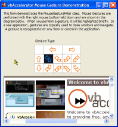
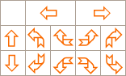

VB5 Mouse Gestures (23K)
VB5 Mouse Gestures (23K)
 VB6 Mouse Gestures (22K)
VB6 Mouse Gestures (22K)
 23 Oct 2003
23 Oct 2003
First Posted
 Detecting Mouse XButton Clicks
Detecting Mouse XButton Clicks
 Win32 Hooks in VB - The vbAccelerator Hook Library
Win32 Hooks in VB - The vbAccelerator Hook Library
 (Incomplete) Docking Forms In VB
(Incomplete) Docking Forms In VB

Enabling Mouse Gestures with a WH_MOUSE hook
Enhancing usability in mouse-driven applications
Use of mouse gestures to control application is becoming increasingly common in the more sophisticated web browsers. This sample demonstrates how you can support a range of mouse gestures in a Visual Basic application using a Windows Hook.
About Mouse Gestures
Most Mac users would agree - having a right mouse button is a great thing. But you'll notice it doesn't get to do that much in Windows applications except popping up a context menu when its released. The idea of mouse gestures gives the button something more to do whilst its held down. The idea is that if you want a popup menu, you're unlikely to move the mouse significantly until you release the button. If you do, then the movement is a candidate to be interpreted as a "gesture".
In theory, you could have an unlimited number of gestures of arbitrary complexity, for example, recognising when someone draws out a picture of an octopus rather than a squid with the mouse. However, in practice gestures are most useful there aren't very many of them and they're nice and simple. The figure below shows some of the sort of gestures users find easy to get used to and aren't too challenging to recognise:
Simple Mouse Gestures
Even this set of gestures is more than you would normally want to support in a single application, as it is easy to forget how to draw a North then East gesture as opposed to East then North, unless you one of the alpha-males with the type of spacial intelligence all males of the species are supposedly automatically inbued with but somehow I never got. Typically, you might want to support the four main directions (left and right can represent back and next, whilst up and down can be used for closing and opening windows) and one or two of the compound gestures.
Technically Speaking
As with Mouse XButtons, you normally want to be able to detect when a gesture occurs anywhere in your application, not just when the mouse is over a particular control. Visual Basic and Windows conspire to make this kind of task fairly tricky as mouse messages are directed specifically to the object the mouse is over. There are two way ways of fixing this, but one (intercepting the application message loop) is all but impossible in VB. The other way is to use a Windows Hook to solve the problem.
These Hooks Are Dangerous
The requirements for a mouse gesture recogniser are twofold. Firstly, you need to be able to detect where the mouse moves when the right mouse button is down, regardless of which control in the application that the mouse is over. Secondly, you need to be able to consume the mouse up event that follows when a gesture is recognised, otherwise the default processing may well be invoked (typically displaying the context menu for the item that the mouse was over when the right button was released). There are three hooks which could be considered for doing this: WH_CALLWNDPROC, WH_MSGFILTER and WH_MOUSE. Unfortunately all have problems. Whilst WH_MSGFILTER appears to be the best choice (it is intended to provide you with the Message before it is send to the Message Loop) unfortunately attempting to consume a message during this Hook doesn't work in VB, which means the FILTER portion of the name is something of a barefaced lie. WH_CALLWNDPROC can be used, but is extremely unstable under VB, for reasons yet to be determined. Whilst this Hook can be used to detect the creation of Windows and install a subclass, beyond that it typically crashes the IDE or any EXE shortly afterwards. That leaves WH_MOUSE.
Don't Ask Me, I Just Work Here
Now WH_MOUSE is a bit rubbish. It provides all mouse events, provided your mouse has no buttons, or you never press them. This means you need to start doing some unexpected stuff if you want to use it to to do gesture recognition. Luckily, the Windows API includes a method to get the state of a key at any time, and the keys include the buttons on the mouse. By using GetAsyncKeyState you can detect if the right mouse is pressed at the time of the call. That solves the problem of determining if the hook should be checking for a mouse gesture, but leaves the issue of ensuring the mouse up event is consumed when the gesture is recognised. My solution to this is a shameless hack - consume the next ten mouse events after you've detected that the mouse gesture has occurred and the mouse is released. It may be shameless, but it works well, so I'm going to leave it at that.
Some Code
With these thoughts in mind the code isn't too hard to put together with the Hook library. Firstly, you install the Hook and then you start checking all mouse events to see if the right button state changes. If it does, then start tracking the mouse position. Once the mouse is released, check the points that you tracked and see if the mouse moved far enough to equate to a gesture; if it did, set a flag to consume the next ten mouse messages and raise an event indicating which event occurred. Here's the main Hook implementation:
Private Declare Function GetAsyncKeyState Lib "user32" ( _ ByVal vKey As Long) As Integer Private Const WM_ACTIVATE As Long = &H6 Private Const WM_RBUTTONDOWN As Long = &H204 Private Const WM_MOUSEMOVE As Long = &H200 Private Const WM_RBUTTONUP As Long = &H205 '''''' Array of mouse points recorded during gesture. ''' Private m_gesture() As POINTAPI Private m_gestureCount As Long '''''' Whether mouse gesture checking is attached or not ''' Private m_bAttached As Boolean '''''' Whether right mouse button down on last hook event or not ''' Private m_bRightDown As Boolean Private m_iCancelRightUpHack As Long Implements IWindowsHook Public Sub Attach() If Not (m_bAttached) Then InstallHook Me, WH_MOUSE m_bAttached = True End If End Sub Public Sub Detach() If (m_bAttached) Then RemoveHook Me, WH_MOUSE m_bAttached = False End If End Sub Private Function IWindowsHook_HookProc( _ ByVal eType As vbalWinHook.EHTHookTypeConstants, _ ByVal nCode As Long, _ ByVal wParam As Long, ByVal lParam As Long, _ bConsume As Boolean) As Long Dim ret As Boolean Dim bRightDown As Boolean Dim iMsg As Long bRightDown = Not (GetAsyncKeyState(vbKeyRButton) = 0) If (bRightDown) Then If Not (m_bRightDown) Then m_bRightDown = True iMsg = WM_RBUTTONDOWN Else iMsg = WM_MOUSEMOVE End If ElseIf (m_bRightDown) Then m_bRightDown = False m_iCancelRightUpHack = 0 ' apologies iMsg = WM_RBUTTONUP Else ' eat next 10 mouse moves after right up If (m_iCancelRightUpHack < 10) Then m_iCancelRightUpHack = m_iCancelRightUpHack + 1 ret = True End If End If If Not (ret) Then ret = PreFilterMessage(iMsg) End If If (ret) Then bConsume = True IWindowsHook_HookProc = 0 End If End Function
The PreFilterMessage routine does the work of actually detectingthe gestures and interpreting which gesture has been made. The main elements of work are to track all the points that the mouse moves to during gesture capture and then to use that to determine which gesture was performed. Note also that although the mouse up event is consumed by the application when the gesture is recognised, this leaves the system in a state where it believes the right mouse button is still down. To prevent this occurring, but to keep the default mouse up processing from happening, I post a right mouse up to the window at a point that is guaranteed to be offscreen. The steps in capturing mouse movement and posting the mouse up are shown below:
Private Type POINTAPI x As Long y As Long End Type Private Declare Function PostMessage Lib "user32" Alias "PostMessageA" _ (ByVal hwnd As Long, ByVal wMsg As Long, _ ByVal wParam As Long, ByVal lParam As Long) As Long Private Declare Function GetCursorPos Lib "user32" ( _ lpPoint As POINTAPI) As Long '''''' Array of mouse points recorded during gesture. ''' Private m_gesture() As POINTAPI Private m_gestureCount As Long Private Function PreFilterMessage( _ ByVal iMsg As Long _ ) As Boolean Dim retValue As Boolean If (m_gestureTypes > 0) Then If (m_checkingGesture) Then If (iMsg = WM_MOUSEMOVE) Then AddToMouseGesture ElseIf (iMsg = WM_RBUTTONUP) Then retValue = EndMouseGesture() If (retValue) Then ' Windows will skip the next mouse down if we consume ' a mouse up. m cannot be modified, despite being byref, ' so post a new one to a location which is offscreen: Dim offScreen As Long offScreen = &H7FFF7FFF PostMessage GetActiveWindow(), WM_RBUTTONUP, 0, offScreen End If ElseIf (iMsg = WM_ACTIVATE) Then m_checkingGesture = False End If ElseIf (iMsg = WM_RBUTTONDOWN) Then BeginMouseGesture End If End If PreFilterMessage = retValue End Function Private Sub BeginMouseGesture() m_gestureCount = 1 ReDim m_gesture(1 To m_gestureCount) As POINTAPI Dim tP As POINTAPI GetCursorPos tP LSet m_gesture(m_gestureCount) = tP m_checkingGesture = True End Sub Private Sub AddToMouseGesture() m_gestureCount = m_gestureCount + 1 ReDim Preserve m_gesture(1 To m_gestureCount) As POINTAPI Dim tP As POINTAPI GetCursorPos tP LSet m_gesture(m_gestureCount) = tP End Sub
The last step is to determine which mouse gesture was performed. The code does this by detecting how far the mouse moved horizontally and vertically, then checking whether most of the travel occurred vertically or horizontally during that motion:
'''''' The default absolute number of pixels the mouse must travel ''' in any direction for the gesture to be acknowledged. ''' Private Const DEFAULT_HYSTERESIS_PIXELS As Integer = 8 Private Function EndMouseGesture() As Boolean m_checkingGesture = False Dim retValue As Boolean '' add the end point: AddToMouseGesture '' get start and end: Dim first As POINTAPI LSet first = m_gesture(1) Dim last As POINTAPI LSet last = m_gesture(m_gestureCount) '' check which directions we register a change in: Dim xDiff As Long xDiff = first.x - last.x Dim yDiff As Integer yDiff = first.y - last.y Dim north As Boolean Dim south As Boolean Dim east As Boolean Dim west As Boolean If (Abs(yDiff) > DEFAULT_HYSTERESIS_PIXELS) Then north = (yDiff > 0) south = Not (north) End If If (Abs(xDiff) > DEFAULT_HYSTERESIS_PIXELS) Then west = (xDiff > 0) east = Not (west) End If '' check for very narrow angles as these are probably '' not compound gestures If ((north Or south) And (east Or west)) Then If (Abs(xDiff) > Abs(yDiff)) Then If ((Abs(xDiff) / (Abs(yDiff) * 1#)) > 7) Then Debug.Print "Cancelling north/south contribution" north = False south = False End If Else If ((Abs(yDiff) / (Abs(xDiff) * 1#)) > 7) Then Debug.Print "Cancelling east/west contribution" east = False west = False End If End If End If m_recordedGesture = MouseGestureTypes.NoGesture If (north Or south) Then If (east Or west) Then ' compound gesture m_recordedGesture = interpretCompoundGesture( _ first, last, north, south, east, west) Else ' vertical gesture: If (north) Then m_recordedGesture = MouseGestureTypes.NorthGesture Else m_recordedGesture = MouseGestureTypes.SouthGesture End If End If ElseIf (east Or west) Then ' horizontal gesture If (east) Then m_recordedGesture = MouseGestureTypes.EastGesture Else m_recordedGesture = MouseGestureTypes.WestGesture End If End If If Not (m_recordedGesture = MouseGestureTypes.NoGesture) Then If Not ((GestureTypes And m_recordedGesture) = 0) Then Dim bAccept As Boolean RaiseEvent MouseGesture( _ m_recordedGesture, first.x, first.y, _ last.x, last.y, bAccept) retValue = bAccept End If End If EndMouseGesture = retValue End Function Private Function interpretCompoundGesture( _ first As POINTAPI, last As POINTAPI, _ ByVal north As Boolean, ByVal south As Boolean, _ ByVal east As Boolean, ByVal west As Boolean _ ) As MouseGestureTypes Dim retValue As MouseGestureTypes retValue = MouseGestureTypes.NoGesture ' draw a diagonal line between start & end ' and determine if most points are y above ' the line or not: Dim pointAbove As Long pointAbove = 0 Dim pointBelow As Long pointBelow = 0 Dim i As Long Dim point As POINTAPI For i = 1 To m_gestureCount LSet point = m_gesture(i) Dim diagY As Long diagY = ((point.x - first.x) * (first.y - last.y)) / _ (first.x - last.x) + first.y If (point.y > diagY) Then pointAbove = pointAbove + 1 Else pointBelow = pointBelow + 1 End If Next i If (north) Then If (east) Then If (pointAbove > pointBelow) Then retValue = MouseGestureTypes.EastThenNorthGesture Else retValue = MouseGestureTypes.NorthThenEastGesture End If Else If (pointAbove > pointBelow) Then retValue = MouseGestureTypes.WestThenNorthGesture Else retValue = MouseGestureTypes.NorthThenWestGesture End If End If ElseIf (south) Then If (east) Then If (pointAbove > pointBelow) Then retValue = MouseGestureTypes.SouthThenEastGesture Else retValue = MouseGestureTypes.EastThenSouthGesture End If Else If (pointAbove > pointBelow) Then retValue = MouseGestureTypes.SouthThenWestGesture Else retValue = MouseGestureTypes.WestThenSouthGesture End If End If End If interpretCompoundGesture = retValue End Function
This code typically generates the correct results. A better alternative to the deterministic algorithms shown above would be to use Fuzzy Logic to determine which gesture was the most likely. This is the subject of a future article, in the meantime information about implementing Fuzzy Logic please go to CodeProject and search on the author "pseudonym67".
In Use
The logic described above is wrapped up into a class called cMouseGestures. To use the class, first add a reference to the vbAccelerator Windows Hooks DLL, then create a withevents instance of the class:
Private WithEvents mouseGestures As cMouseGestures Private Sub Form_Load() Set mouseGestures = New cMouseGestures mouseGestures.Attach End Sub Private Sub mouseGestures_MouseGesture( _ ByVal gestureType As MouseGestureTypes, _ ByVal xGestureStart As Long, ByVal yGestureStart As Long, _ ByVal xGestureEnd As Long, ByVal yGestureEnd As Long, _ acceptGesture As Boolean) ' Process the gesture here... ' Return True if you've processed it: acceptGesture = True End Sub
By default, the class recognises all mouse gestures. You can adjust which mouse gestures events are raised for by setting the GestureTypes property. This property accepts a bitwise combination of the different gestures that should be recognised from the MouseGestureTypes enumeration.
One thing to note that once the class is installed, it will respond to events over any form in your application. This includes forms that have been shown modally, as well as API dialogs and MessageBoxes, so you need to take care to ensure that these events will not cause problems if they occur at that time. You can solve these problems by disabling the class using Detach or telling the class that it should respond to no gestures by setting the GestureTypes property to NoGesture.
Conclusion
This article presents a class you can use to add Mouse Gestures to a VB application. It allows you to respond to the gestures in a natural way over any form or control and, as the code is provided you can customise the gestures to suit a particular application.